С какими клиниками и врачами мы работаем
Мы не клиника и не турагентство, а ваш проводник. Наша работа — чтобы рядом с вами оказались достойные врачи и проверенные клиники Еревана. Конкретную клинику подбираем под ваш случай.
С какими клиниками мы работаем и как их отбираем
Мы не клиника и не турагентство, а ваш проводник. Сами лечение не проводим — наша работа в том, чтобы рядом с вами оказались достойные врачи и клиники. Мы работаем с ведущими клиниками Армении, среди которых:
Работаем с ведущими клиниками Армении
Среди наших партнёров — многопрофильные центры и профильные клиники Еревана с современным оборудованием и русскоязычным персоналом. Конкретную клинику подбираем индивидуально под ваш случай.
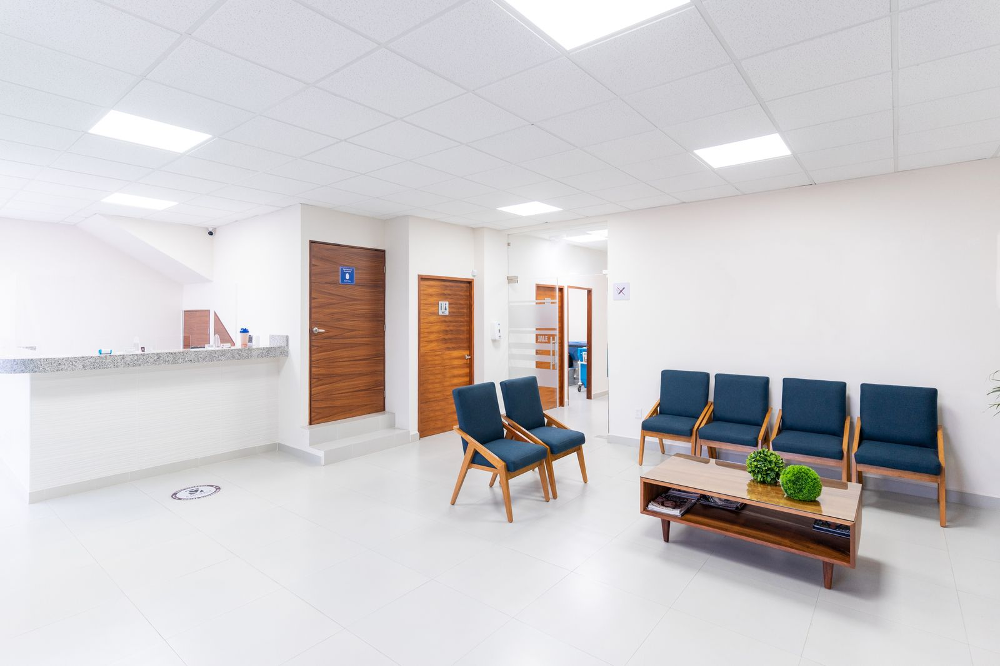
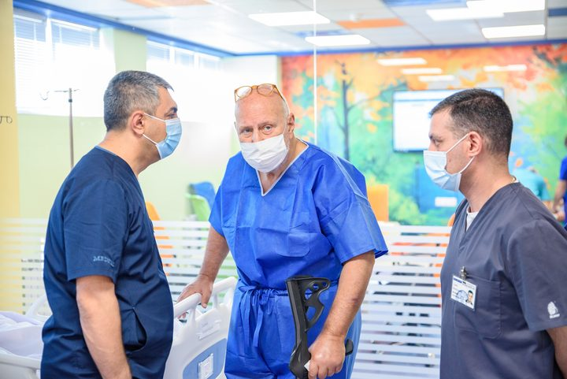
Erebouni
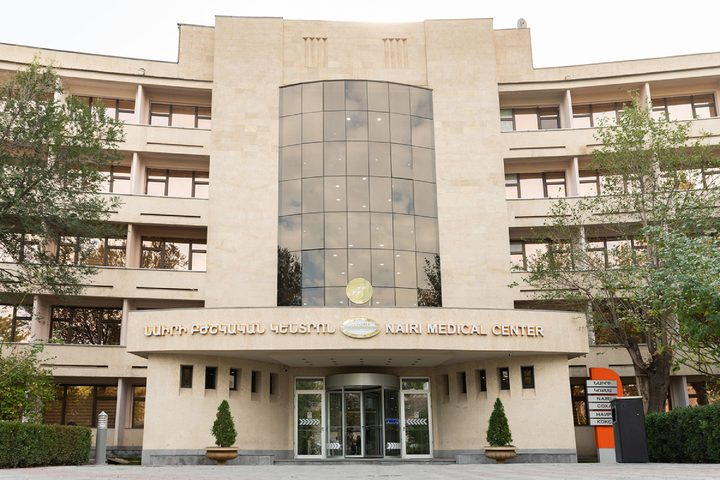
Nairi
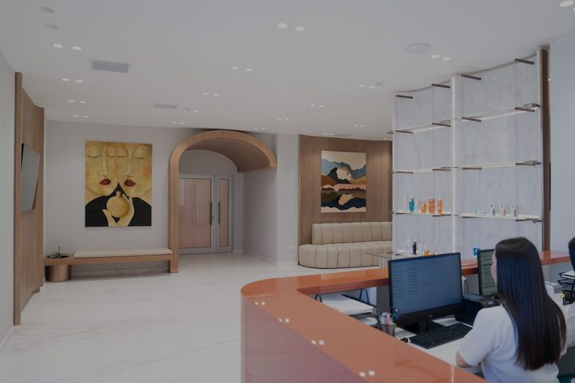
Astghik
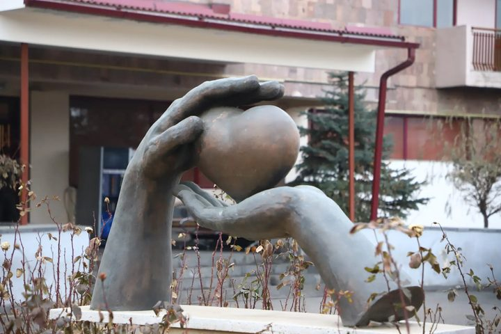
Nork Marash
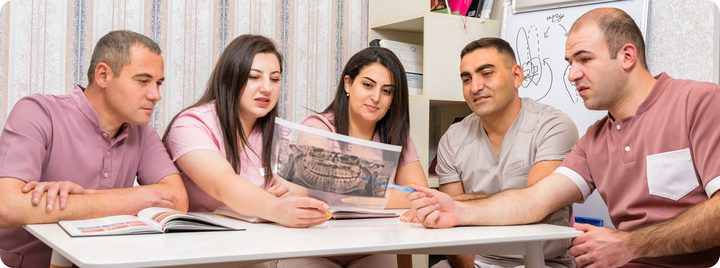
Mary Clinic
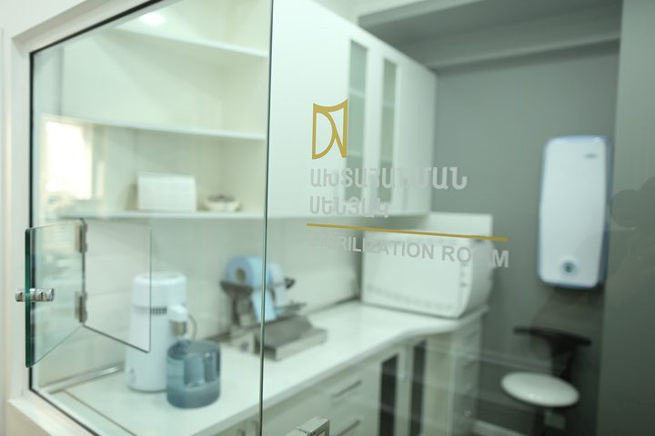
White Castle
Профили клиник указаны по открытым данным; финальную клинику под ваш случай подбираем индивидуально. MedBridge Tourism не является медицинской организацией.
Опыт и репутация
Выбираем многопрофильные клиники и профильные центры с историей, современным оборудованием и понятной репутацией среди пациентов, в том числе из России.
Готовность к русскоязычным пациентам
Отдаём предпочтение клиникам, где есть русскоязычный персонал и привычный формат общения — чтобы вы понимали врача, а врач понимал вас.
Прозрачность по ценам и плану
Работаем с теми, кто открыто называет план лечения и из чего складывается смета. Никаких «всё посчитаем на месте» без предупреждения.
Прямой договор и оплата клинике
За лечение вы платите напрямую клинике по её договору — деньги не проходят через нас. Это прозрачно и снижает ваши риски.
Международные стандарты и лицензии
Мы отдаём приоритет клиникам, которые подтверждают качество независимыми аккредитациями. Среди партнёров — центр с международной аккредитацией JCI и клиники, сертифицированные по ISO 9001. Все клиники работают по лицензии Министерства здравоохранения Республики Армения.
Вас лечат конкретные профильные врачи
Мы заранее называем имя и присылаем профиль специалиста под ваш случай. Вот наши профильные врачи-партнёры в Ереване.
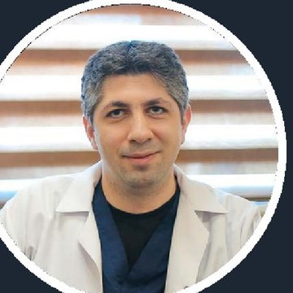
Dr. Ashot Harutyunyan
- Ринопластика: первичная, функциональная, реконструктивная
- Контурная пластика лица (подбородок, скулы)
- Эндоскопический лифтинг бровей и средней зоны
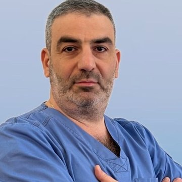
Эдгар Карапетян
- Дентальная имплантация (включая немедленную нагрузку)
- Синус-лифтинг и костная пластика (аугментация)
- 3D-планирование и навигационные шаблоны
Конкретного врача под ваш случай подбираем индивидуально. Лечение проводит клиника по прямому договору с вами; MedBridge Tourism отвечает за подбор и сопровождение.
До и после: реальные работы врачей
Несколько примеров ринопластики и контурной пластики лица. Результат индивидуален и зависит от исходных данных.
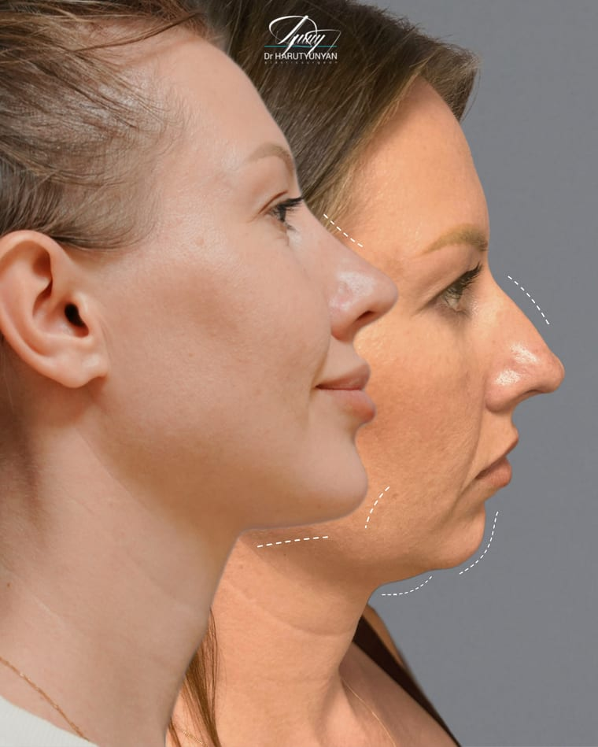
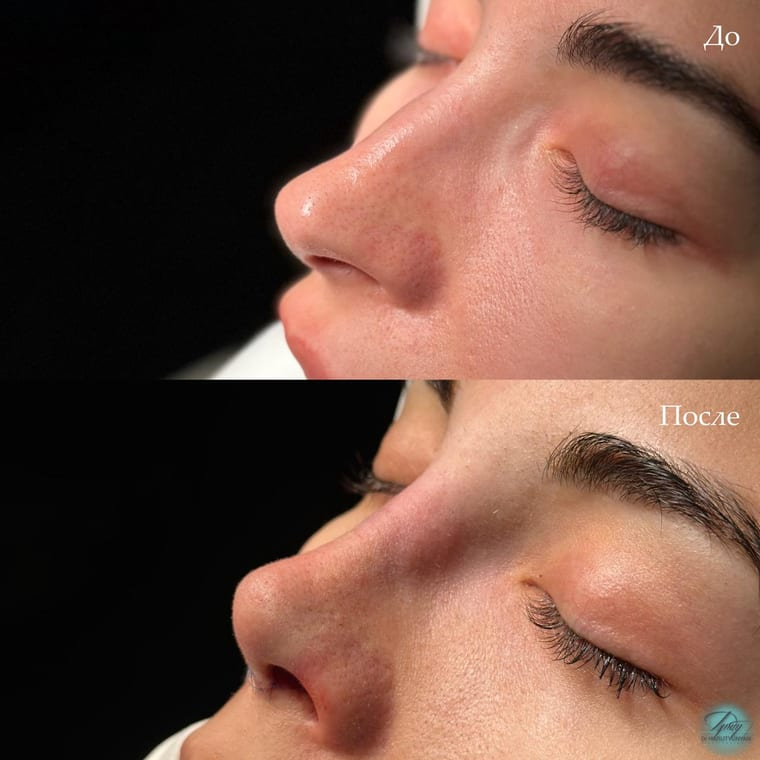
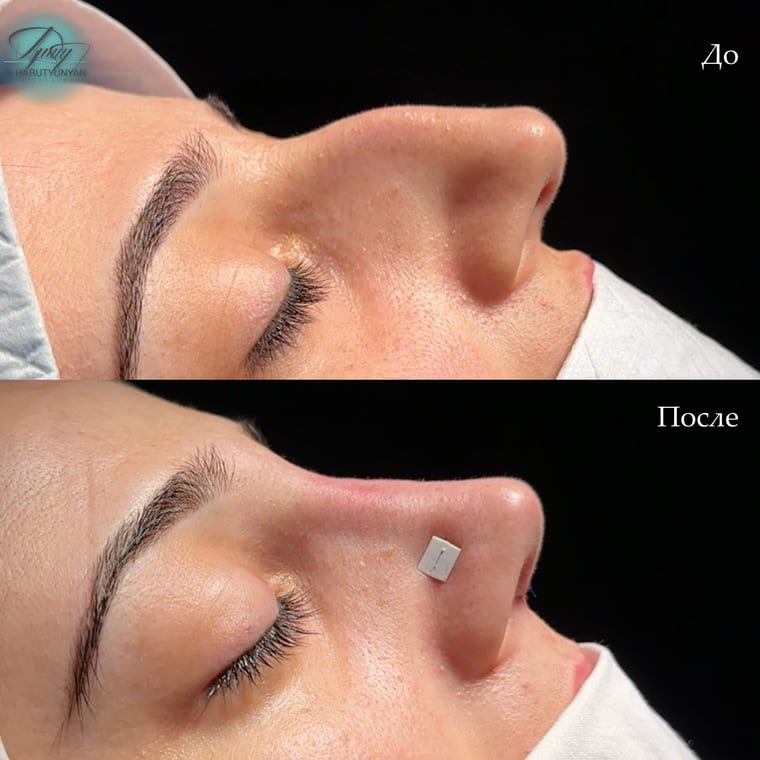
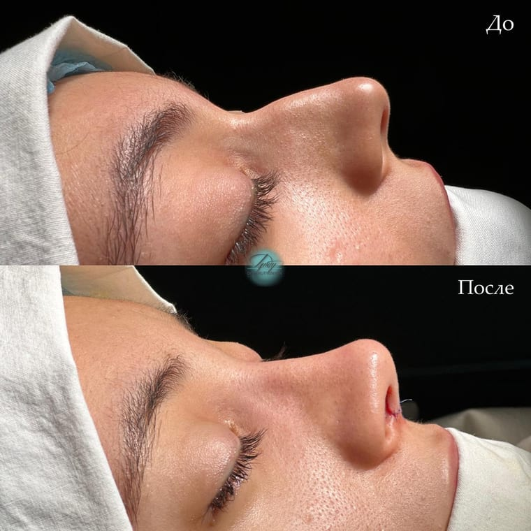
Результаты наших пациентов
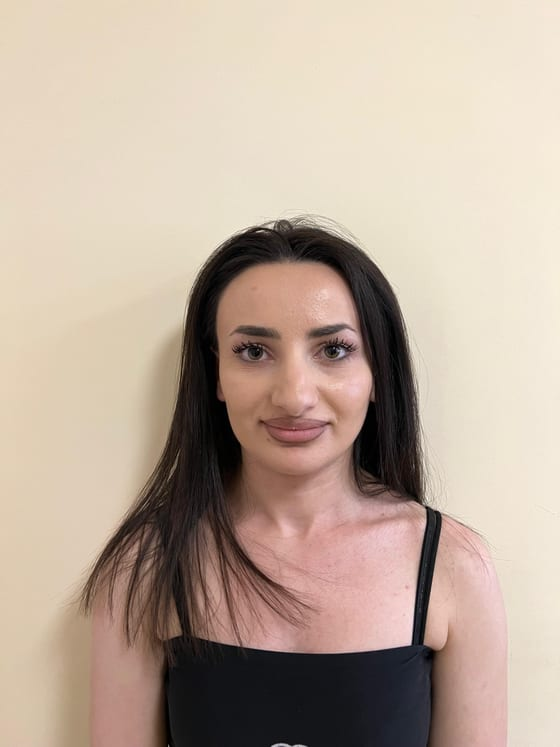
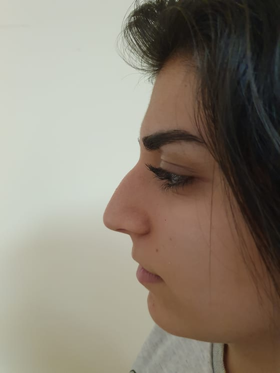
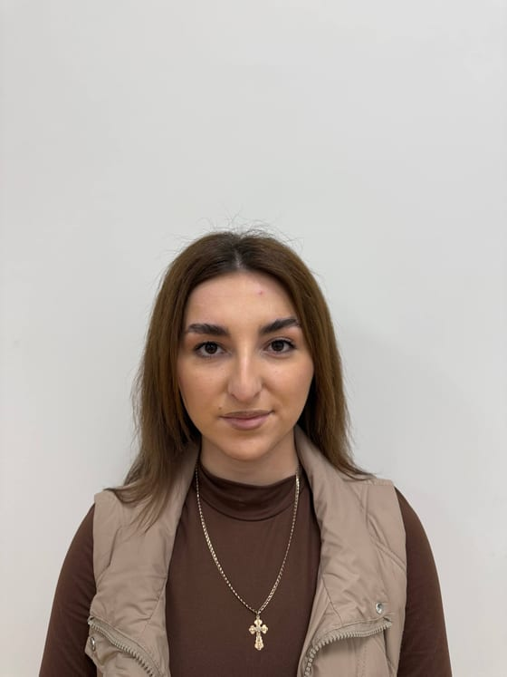
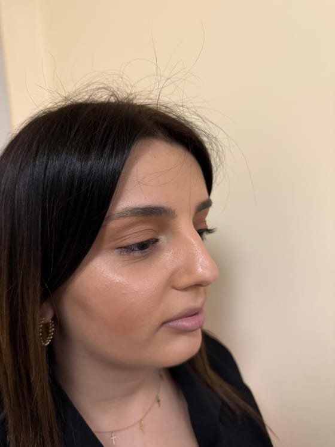
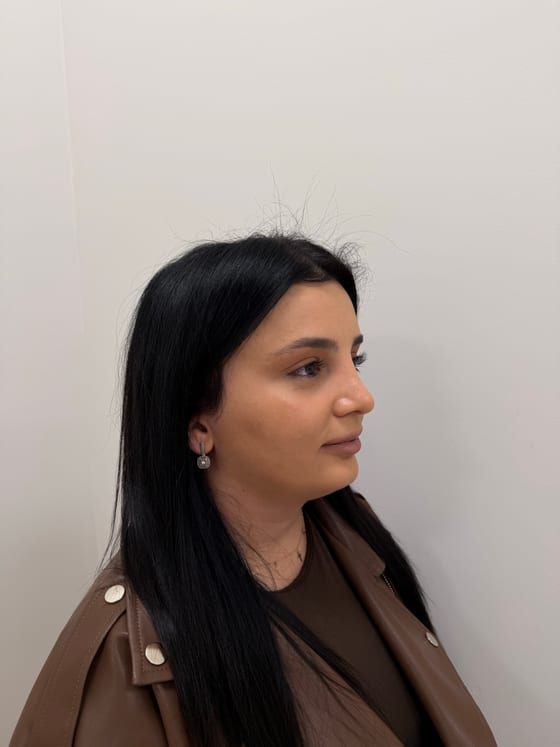
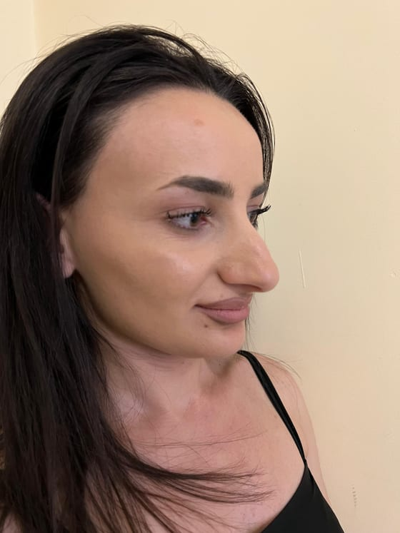
Реальные работы и пациенты врача-партнёра Dr. Ashot Harutyunyan; фото публикуются с письменного согласия пациентов. Результат индивидуален и не является гарантией. Имеются противопоказания, необходима консультация специалиста. MedBridge Tourism оказывает организационные услуги и не осуществляет медицинскую деятельность.
Подберём клинику и врача под ваш случай
Расскажите о своей ситуации — мы бесплатно подберём подходящую клинику и профильного врача, заранее пришлём профиль специалиста и посчитаем смету «под ключ» за 1 день. Это ни к чему вас не обязывает.
Бесплатный расчёт сметы
Рассчитать за 1 минуту Написать координатору Оставить заявку на расчётИмеются противопоказания, необходима консультация специалиста. MedBridge Tourism оказывает организационные услуги и не осуществляет медицинскую деятельность.